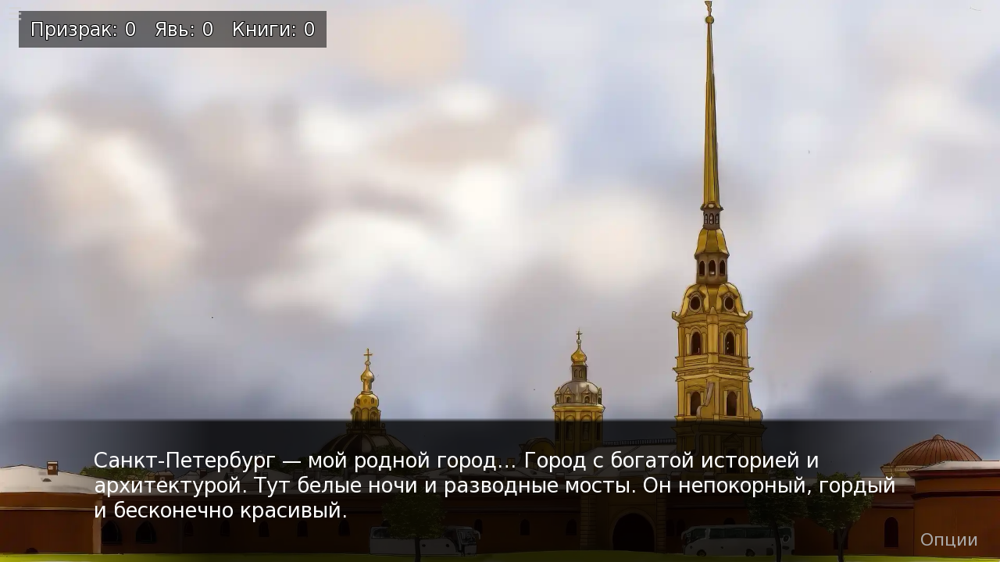
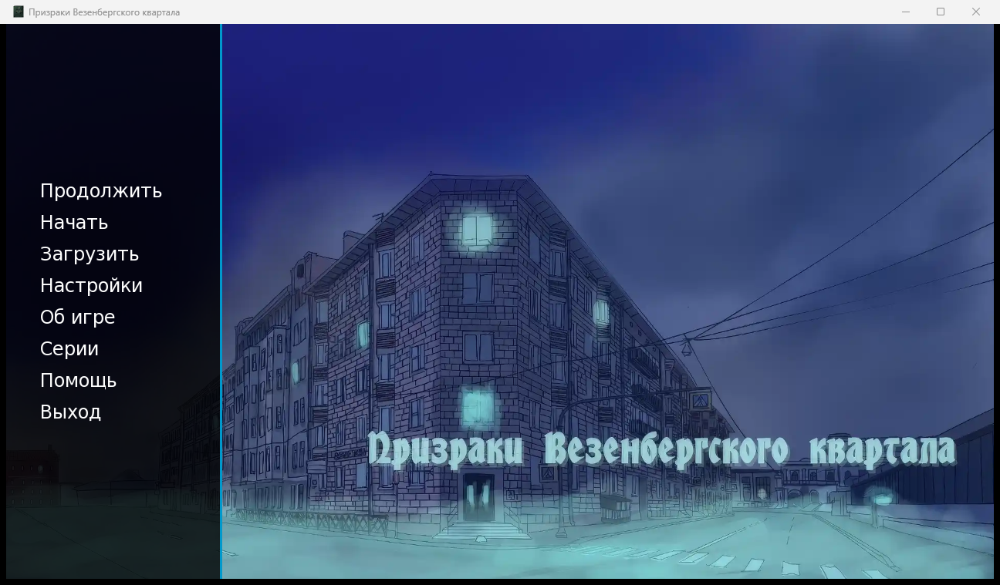
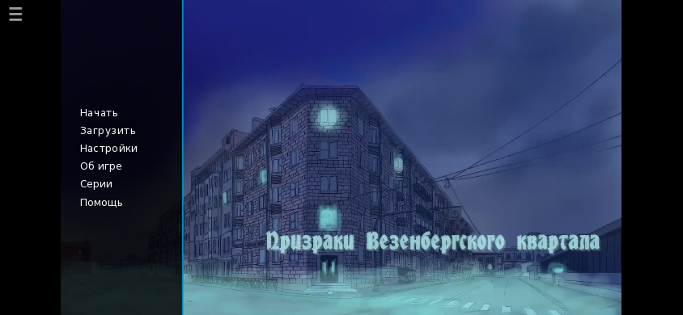

Пять серий
Межмирье, Бал призраков, Голос из омута, Призраки предприятий и станция, где решается всё.
Визуальная новелла · Санкт-Петербург · 16+
Санкт-Петербург полон легенд и призраков, о которых мы порой даже не подозреваем. Однажды на улице Шкапина, в библиотеке им. К. А. Тимирязева, начали происходить странные события: исчезли библиотекари, а квартал окутал туман.
Пять серий, три финала и один город, который помнит больше, чем кажется.

О истории
Визуальная новелла расскажет некоторые легенды территории у Обводного канала, где располагается библиотека им. К. А. Тимирязева. Многие рассказы основаны на реальных исторических событиях, но это всё же художественное произведение, иногда намеренно отступающее от реальных фактов.
Межмирье, Бал призраков, Голос из омута, Призраки предприятий и станция, где решается всё.
Путь Яви, путь Призрака или компромисс. Развилки меняют не только концовку, но и tone истории.
Шкапина, Розенштейна, Обводный канал, «Красный треугольник», Балтийский вокзал и книги-улики.
В некоторые моменты истории будут случаться развилки, необходимо будет сделать выбор, который может привести вас на разные пути развития истории. Какой будет финал, зависит только от вас и от того, что вам ближе — мир призраков или мир яви.
Игра полностью бесплатная. Проходить её можно с компьютера, планшета или телефона. Для атмосферного прохождения советуем включить звук.
16+
Кадры


Платформы
PC, Mac, Linux, iPhone, iPad, Android. PWA, работает офлайн после первого запуска.
Открыть игру →APK для Android и портативная папка с EXE для Windows. Установка не требуется.
Скачать сборки →Пять концептов интерфейса. После выбора стиля весь UI будет перерисован и адаптирован.
Выбрать стиль →